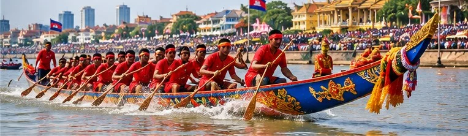

Festivals & Traditions
Bon Om Touk Boat Teams: How Pagodas and Provinces Prepare
Long before the Water Festival races begin, crews in villages and pagodas across Cambodia are repairing boats, recruiting rowers and practising on local rivers. This guide looks at that preparation, using published reports from past festivals and this year's provincial plans.

Where the boats come from
The racing boats of Bon Om Touk are not owned by a national league. Most belong to communities, and very often to a pagoda. Wikipedia's article on the festival describes boats "from every major pagoda in Cambodia" coming to Phnom Penh to compete, and the ethnologist Ang Choulean of the APSARA National Authority told Cambodianess in 2023 that a racing boat "can only be stored inside the pagoda."
A 2016 Cambodia Daily feature, "Preparing the Boats," shows how this works in practice. It followed the Chumteav Srey Mao crew, backed by Chamkar Khsach pagoda and training in Meuntra village in Phnom Penh's Dangkao district. The team was run by Uong Cheb, a lay priest and deputy director of the pagoda committee, with a 53-year-old coach. The team had two boats, and the older one had been repaired with a donation of 5 million riel (about $1,250) from the then Minister of Water Resources.
Other boats represent a village, a district or a whole province, and some are sponsored by companies or individuals. The crews themselves are mostly local people. A 2000 Cambodia Daily report described a crew of 69 men from Prek Narin village in Battambang province, most of them farmers.
A boat with a spirit
For many Cambodians a racing boat is more than equipment. In the same Cambodianess interview, Ang Choulean explained that people consider racing boats to be spirits. A boat may be given a name and decorated with hair or eyes, and pregnant women are traditionally kept away from it, including when it leaves the pagoda for training. Wikipedia notes that racing boats are always painted with eyes, which gives the impression that the boat is alive.
Because of this, the start of the season is marked with ritual. In 2015 the Cambodia Daily watched a crew from Banteay Meanchey bless its boat with water and incense before lowering it into the river in Siem Reap, while Buddhist chanting and a two-stringed tro were played. The Chamkar Khsach crew held a boat blessing in 2016, described as a spiritual send-off, before leaving its village for the races in central Phnom Penh.
Crews and training
Racing boats are long and need large crews. Wikipedia's table of recent Phnom Penh winners lists boats carrying between 64 and 77 people. Ang Choulean recalled that in the 1950s and 1960s boats were smaller and could hold only a little more than 30 rowers.
Finding enough rowers is not always easy. In 2015 the 58-year-old captain of a Siem Reap boat told the Cambodia Daily that last year's crew had left to work in Thailand and elsewhere, so "we have to visit other districts and villages to recruit people for the team." In an interview republished by Tour Cambodia, a rower from Kampong Thom province explained that his crew had been recruited to race for Stung Treng province because Stung Treng did not have enough rowers of its own.
In the accounts we read, serious training starts a week or two before the festival. The Chamkar Khsach rowers had been meeting at 2 p.m. every day for two weeks before the 2016 races, and the Banteay Meanchey crew in Siem Reap said it practised twice a day, morning and evening, for the week before racing. The Kampong Thom rower said his team had its boat and paddles ready 15 days before the festival and then trained together on a river near their village.
Crews also use rhythm to row together. Ang Choulean described a dancer at the bow who keeps morale up and helps the rowers stay in time; in some boats, a senior man sits in one place and chants instead.
Paying for the journey
Racing costs money: repairs, transport, food and somewhere to sleep. Published accounts show a mix of support from local authorities, pagodas, donors and companies.
In 2000, the Battambang crew travelled 26 hours by slow boat to Phnom Penh. Provincial authorities gave each rower 1 kilogram of rice a day and the crew 5,000 riel a day, the city promised sleeping places at schools, and a soft-drink company sponsored 50 boats. The crew's leader still said that nobody in Battambang was sponsoring them, and some rowers arrived with no pocket money. The Kampong Thom rower who raced for Stung Treng said a Phnom Penh donor had paid for his crew's transport, accommodation and meals, and that each of the two races they rowed could earn the boat 250 dollars, shared among the rowers if they won.
The scale can be large. Citing a National Police report, the Cambodia Daily counted 14,630 racers in 259 teams for the 2016 regatta in Phnom Penh, including three all-female teams.
Provincial races in 2026
This year the national boat races in front of the Royal Palace will not take place. In July 2026 a government circular called off the main Water Festival events in Phnom Penh for the second year in a row, as reported by The Star, while keeping the three-day public holiday. According to the official list on our Cambodian public holidays page, that holiday runs from 23 to 25 November 2026. The full moon of Kadeuk, the festival's central night, falls on 24 November, according to the lunar calendar behind our Khmer Calendar.
Provinces were left to organise their own celebrations. Cambodianess reported on 28 October that several provinces had planned boat races, including:
- Kampong Thom: races on the Stung Sen River on 7 November, followed by evening concerts.
- Pursat: races on the Pursat River in the provincial town on 8 November.
- Svay Rieng: boat races from 8 to 11 November, with canoe, kayak and rowing events, within a festival running 7–12 November.
- Siem Reap: boat races on 23 and 24 November, within events along the Siem Reap River from 20 to 25 November.
- Kampot: three days of races on the Kampot River, 23–25 November.
- Kampong Speu: boat races on 24 November.
If you want to watch
Local plans can change, so check the provincial administration's announcements before you travel. Smaller provincial races are also a good chance to see the side of the festival described above: boats carried out of the pagoda, crews from nearby villages and families cheering from the riverbank.
For the meaning of the festival and the Tonle Sap river, see our guide to the Water Festival (Bon Om Touk). For the moon salutation and the eating of flattened rice on the full-moon night, read Ak Ambok and the Moon Salutation.
Frequently asked questions
Who owns the racing boats in Cambodia's Water Festival?
Most boats belong to communities, very often a pagoda, where the boat is stored between festivals. Others represent a village, district or province, and some are supported by donors, companies or officials.
How many rowers are in a Bon Om Touk boat?
It varies with the boat. Recent winning boats in Phnom Penh listed on Wikipedia carried between 64 and 77 people, while boats in the 1950s and 1960s held a little over 30 rowers, according to the ethnologist Ang Choulean.
Why do racing boats have eyes?
Many Cambodians regard a racing boat as having a spirit. Painted eyes make the boat look alive, and boats are blessed with water and incense before they go on the river.
Are there boat races in Phnom Penh in 2026?
No. The main Phnom Penh events were called off for 2026, but the 23–25 November public holiday remains and several provinces, including Siem Reap and Kampot, planned their own races.
Sources and further reading
- The Cambodia Daily: “Preparing the Boats” (12 November 2016) — the Chamkar Khsach pagoda crew: organisation, boat repairs, training schedule, blessing ceremony and 2016 race figures.
- The Cambodia Daily: “Boat Racers Begin Preparations for Festival” (7 November 2000) — a Battambang crew's journey to Phnom Penh, provincial support and company sponsorship.
- The Cambodia Daily: “Festival Boats Off to the Races in Siem Reap” (25 November 2015) — a boat blessing with water and incense, training and recruiting crews.
- Cambodianess: “The Origin of the Water Festival” (26 November 2023) — interview with ethnologist Ang Choulean on boat spirits, storage at pagodas, boat sizes and the bow dancer.
- Wikipedia: Bon Om Touk — pagoda boats in Phnom Penh, painted eyes, and the table of winning boats and crew sizes.
- Tour Cambodia: “Kosal, the navigator of the Tonle Sap Regattas” (republished from Seripheap) — a rower's account of recruitment, training, a donor's support and race prize money.
- The Star: “Cambodia calls off traditional water festival for second consecutive year” (1 July 2026) — the 2026 circular cancelling the main Phnom Penh events while keeping the public holiday.
- Cambodianess: “Cambodian Provinces Keep Water Festival Alive Despite Phnom Penh Cancellation” (28 October 2026) — provincial Water Festival and boat-race plans for 2026.
Dates for lunar observances follow the Khmer lunar calendar and can differ by a day locally. Check with your pagoda or official announcements for exact times.
Explore more: Water Festival (Bon Om Touk) · Ak Ambok and the Moon Salutation · Cambodian Public Holidays · Khmer Calendar
← Back to the MyBirthSign Blog